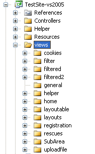

Working with Views
From the MonoRail perspective the view is in charge of presenting the data supplied by the controller. The controller is not aware of how the view is implemented, nor the underlying view engine you chose. This is intentional and is what separation of concerns is all about.
Folder structure convention
There must be a folder for the views. Each subfolder should be named after the controller's name. If the controller is associated with an area, that must be reflected in the folder structure as well.

Selecting a view to render
When an action is invoked, MonoRail pre-selects the action name as the view to be rendered. For example:
using Castle.MonoRail.Framework; public class CustomerController : Controller { public void Index() { } }
If the action Index is invoked (from a client's browser) the views\customer\index view file will be preselected.
MonoRail will never use file extensions in the controller to define the view to be rendered. Every View Engine uses a different file extension, but that is not reflected on the controller's code.
If instead of sending the views\customer\index view the programmer wanted to send a different view, they could use the RenderView method which selects a different view.
using Castle.MonoRail.Framework; public class CustomerController : Controller { public void Index() { RenderView("welcome"); } }
The code above will select a view file located at views\customer\welcome.
The view is not processed when RenderView is invoked. It simply defines the name of the view to be used for the current action. Code continues executing after RenderView is called and the view will be processed after the action completes.
Passing parameters to the view
You would probably want to supply data to the view so it can generate dynamic content. This should be done using the PropertyBag. For example:
using Castle.MonoRail.Framework; public class TestController : Controller { public void ShowTime() { PropertyBag["now"] = DateTime.Now; } }
The PropertyBag is a dictionary. Every View Engine uses an approach to make the data available to the view. Using NVelocity View Engine as an example, the data will be present as a context variable. The following is a small NVelocity template example:
<html>
Hello, the time now is $now
</html>
To see a list of variables available within the NVelocity view engine please see the NVelocityViewEngine documentation.
Shared views
Some views could be shared among controllers, or you might want to render a view from another controller. For those cases, use RenderSharedView
using Castle.MonoRail.Framework; public class CustomerController : Controller { public void Index() { RenderSharedView("common/welcome"); } }
The code above will select a view file located at views\common\welcome.
Cancelling a view
Although it might sound strange, there are situation were you do not want any view processing to take place. For those cases, use the CancelView method.
using Castle.MonoRail.Framework; public class CustomerController : Controller { public void Index() { CancelView(); } }
Found an error? Something inaccurate? Help us improve the documentation
Generated by Castle Anakia.
Sponsored by  Castle Stronghold.
Castle Stronghold.